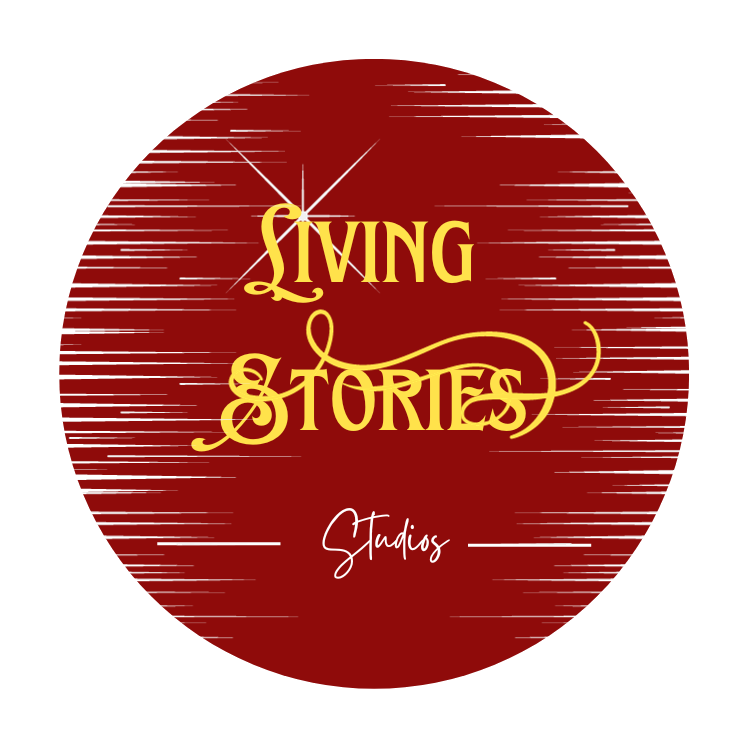

<!-- This will be my personal portfolio website. -->
<!DOCTYPE html>
<html>
<header>
<!-- Style and tags and browser configurations. -->
<title> LSS Pig </title>
<meta name="description" content="Marcus Merritt Portfolio">
<meta name="keywords" content="Illustration, Playwright, Role Playing Simulation, Renewables">
<meta http-equiv="Content-Script-Type" type="text/JavaScript">
<meta http-equiv="Content-Style-Type" type="text/CSS">
<link rel="stylesheet" href="portfolio_stylesheet.css">
</header>


<body>
<!-- Sections will be segmented into sequenced layers. -->
<!-- Section origins: greetings. -->
<div class="section_origin" id="so-alien">
<div class="section_origin-part_1" id="so-p1-greetings_earthling"></div>
<div class="section_origin-part_2" id="so-p2-chat"></div>
<div class="section_origin-part_3" id="so-p3-suggestion_box"></div>
<div class="section_origin-part_4" id="so-p4-social_relay"></div>  
</div>

<!-- Section one: navigation. -->
<div class="section_1" id="s1-navigation">
<div id="so-p2-chat"></div>
<div class="section_1-part_1" id="s1-p1-logo"></div> 
<div class="section_1-part_2" id="s1-p2-greetings"></div>
<div class="section_1-part_3" id="s1-p3-navigation_bar"></div>     
</div>

<!-- Section two: invitation. -->
<div class="section_2" id="s2-invitation"></div>

<!-- Section three: welcoming. -->
<div class="section_3" id="s3-welcoming">
<div class="section_3-part_1" id="s3-p1-wonders">
<div class="section_3-part_1-subsection_1" id="s3-p1-ss1-digital_arts"></div>
<div class="section_3-part_1-subsection_2" id="s3-p1-ss2-interactive_arts"></div>
<div class="section_3-part_1-subsection_3" id="s3-p1-ss3-interactive_realities"></div>
</div>

<div class="section_3-part_2" id="s3-p2-discovery">
<div class="section_3-part_2-subsection_1" id="s3-p2-ss1-call_to_action"></div>
<div class="section_3-part_2-subsection_2" id="s3-p2-ss2-role_playing_simulations"></div>
</div>
</div>

<!-- Section four: hotlinks - questions. -->
<div class="section_4" id="s4-hotlinks"></div>

<!-- Section five: inquire. -->
<div class="section_5" id="s5-inquire"></div>
<div class="section_5-part_1" id="s5-p1-communications_form"></div>
<div class="section_5-part_2" id="s5-p2-communications_invitation"></div>    
</div>

<!-- Section six: guidance. -->
<div class="section_6" id="s6-guidance"></div>

<!-- Section seven: community. -->
<div class="section_7" id="s7-community">
<div class="section_7-part_1" id="s7-p1-connection">
<div class="section_7-part_1-subsection_1" id="s7-p1-ss1-experience"></div>
<div class="section_7-part_1-subsection_2" id="s7-p1-ss2-virtues"></div>
<div class="section_7-part_1-subsection_3" id="s7-p1-ss3-craftmanship"></div>
</div>

<div class="section_7-part_2" id="s7-p2-newsletter">
<div class="section_7-part_2-subsection_1" id="s7-p2-ss1-paper"></div>
<div class="section_7-part_2-subsection_2" id="s7-p2-ss2-solicitation"></div>
</div>

<div class="section_7-part_3" id="s7-p3-education_exploration">
<div class="section_7-part_3-subsection_1" id="s7-p3-ss1-exhibits"></div>
<div class="section_7-part_3-subsection_2" id="s7-p3-ss2-field_trip"></div>
<div class="section_7-part_3-subsection_3" id="s7-p3-ss3-education_resources"></div>
</div>
</div>

<!-- Section eight: commitment. -->
<div class="section_8" id="s8-commitment_to_God">
<div class="section_8-part_1" id="s8-p1-guiding_pillars"></div>
<div class="section_8-part_2" id="s8-p2-ongoing_commitment"></div>
<div class="section_8-part_3" id="s8-p3-ongoing_commitment"></div>
<div class="section_8-part_4" id="s8-p3-future_commitment"></div>
</div>
</body>


<footer>
<!-- Goodbye and seasons greeting. -->
<div class="section_9" id="s9-outro">
<div class="section_9-part_1" id="s9-p1-footer_logos">


</div>

<div class="section_9-part_2" id="s9-p2-sitemap"></div>
<div class="section_9-part_3" id="s9-p3-organizational_map"></div>
<div class="section_origin-part_4" id="so-p4-social_relay"></div>
<div class="section_9-part_4" id="s9-p4-disclosure"></div>
</div>
</footer>
</html>